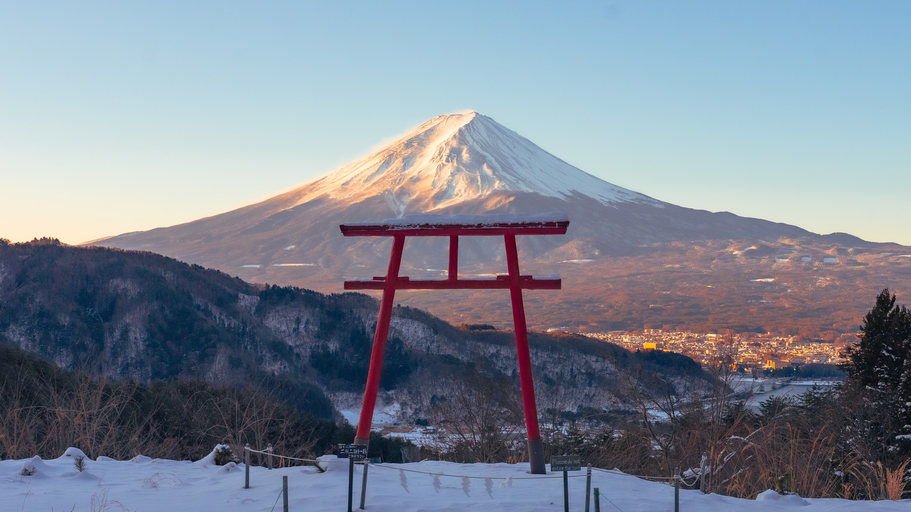
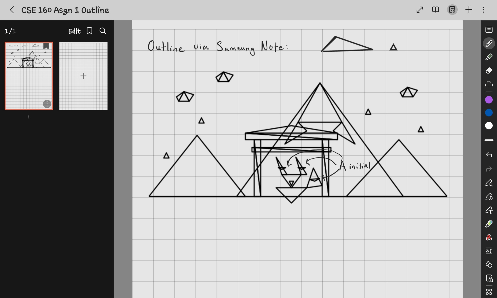

Alexandra Arient
aarient@ucsc.edu
Notes to Grader: My image is inspired by my recent trip to Japan over spring break where I got to see the cherry blossoms (Sakura) bloom and where I also got to see a couple of Inari Shinto shrines. The messenger for the Inari diety is a fox which is why it is included in the drawing. The things I added in order to make this project "Awesome" is a sakura petal rain animation (click Sakura Rain button). I also added an alpha transparency slider which works when in drawing mode. Additionally, there is a "Number Triangles " button that will number each triangle drawn and will only work after you press "Draw Picture". You can find my inspiration image I found online as well as my sketch I did on my Samsung Tablet of triangles to make this image below.
Inspiration: Tenku no Torii (Sky Torii), Lake Kawaguchiko
Source: Destination Japan - Facebook

My sketch:
